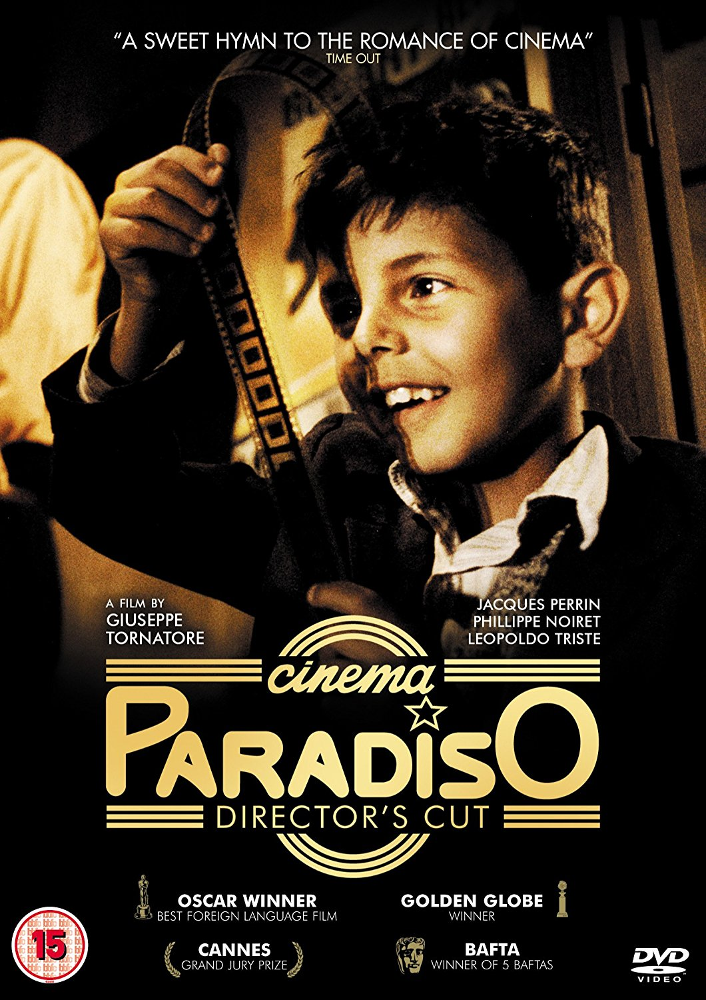
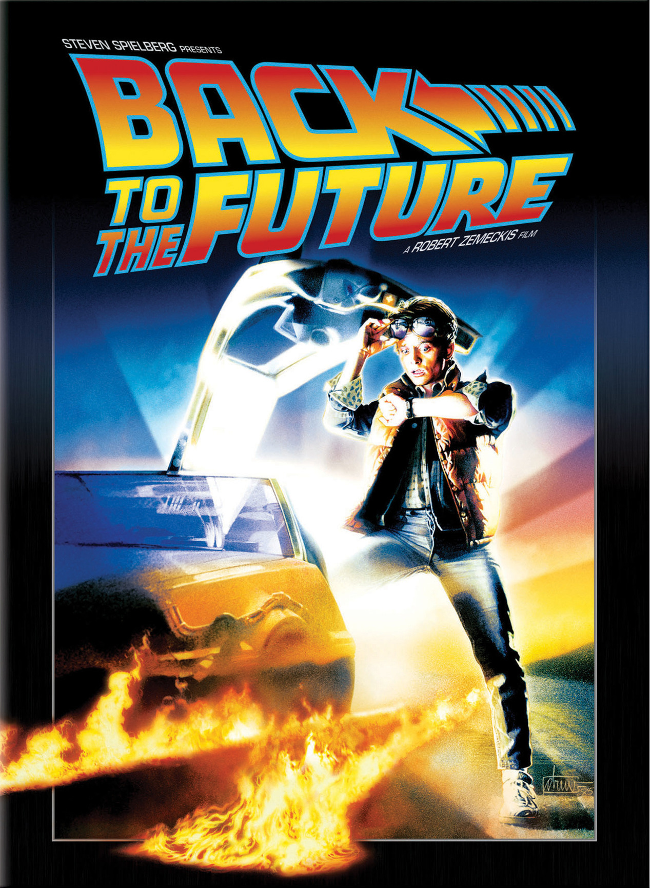
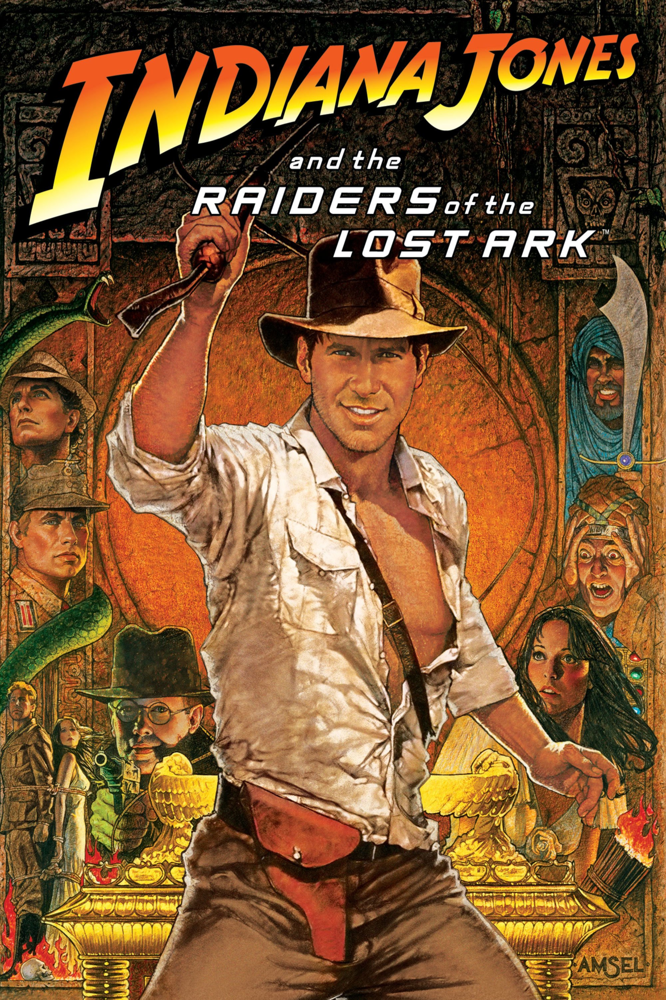

Julien CHIM
Entrepreneur, Video & Music Producer, Violinist
Worked for 3 years in the financial industry. Now following entrepreneurship and music.
|  |
Cinema ParadisoCinema Paradiso (Italian: Nuovo Cinema Paradiso) is a 1988 Italian drama film written and directed by Giuseppe Tornatore. The film stars Jacques Perrin, Philippe Noiret, Leopoldo Trieste, Marco Leonardi, Agnese Nano and Salvatore Cascio, and was produced by Franco Cristaldi and Giovanna Romagnoli, while the music score was composed by Ennio Morricone along with his son, Andrea. It won the Academy Award for Best Foreign Language Film at the 62nd Academy Awards. |
|  |
Back To The FutureeBack to the Future is a 1985 American adventure film directed by Robert Zemeckis and written by Zemeckis and Bob Gale. It stars Michael J. Fox as teenager Marty McFly, who accidentally travels back in time to 1955, where he meets his future parents and becomes his mother's romantic interest. Christopher Lloyd portrays the eccentric scientist Dr. Emmett "Doc" Brown, inventor of the time-traveling DeLorean, who helps Marty repair history and return to 1985. |
|  |
Raiders of the Lost ArkRaiders of the Lost Ark (also known as Indiana Jones and the Raiders of the Lost Ark) is a 1981 American action adventure film directed by Steven Spielberg, written by Lawrence Kasdan from a story by George Lucas and Philip Kaufman. It was produced by Frank Marshall for Lucasfilm Ltd., with Lucas and Howard Kazanjian as executive producers. |